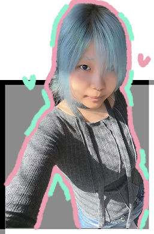
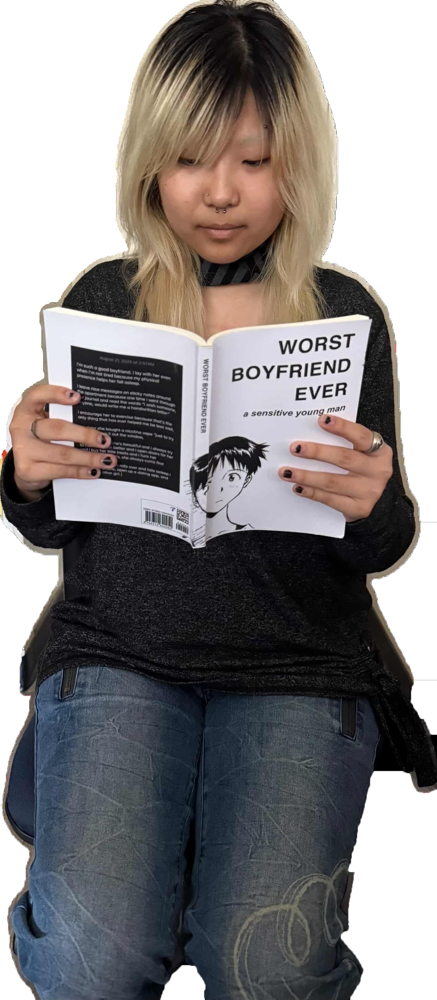

About Me
Part of me is made of video games, film, photography, mixed media, and physical computing.



Statement
Shan is a designer and artist working with games and interactive systems, with a particular interest in level design and spatial storytelling. Based in Los Angeles and open to working globally, her work explores how environments, pacing, and subtle interactions shape emotional experience.
Approach
She is drawn to private, intimate media, where small-scale mechanics and carefully composed spaces invite attention and reflection. With growing interests in 3D modeling and environment design, she approaches games as aesthetic structures, treating space not just as a container for play, but as a medium in itself.
